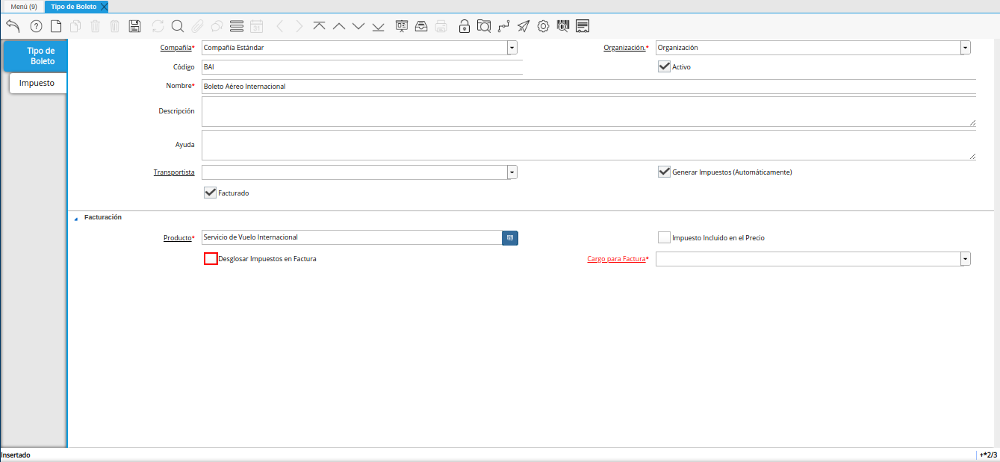
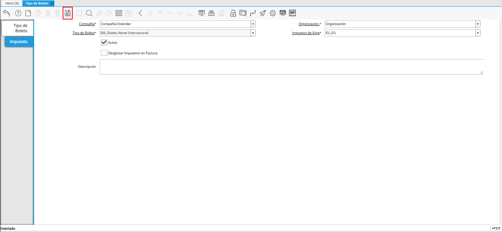

2.8.1. Registro de Tipo de Boleto¶
Ubique y seleccione en el menú de ADempiere, la carpeta “Administración de Agencia de Viajes”, luego seleccione la carpeta “Configuración de Viaje”, por último seleccione la ventana “Tipo de Boleto”.

Imagen 1. Menú de ADempiere
Podrá visualizar la ventana “Tipo de Boleto”, con todos los registros de tipos de boletos.

Imagen 2. Ventana Tipo de Boleto
Seleccione el icono “Registro Nuevo”, y proceda al llenado de los campos correspondientes.

Imagen 3. Icono Registro Nuevo
Seleccione en el campo “Organización”, la organización para la cual se encuentra realizando el registro.

Imagen 4. Campo Organización
Introduzca en el campo “Código”, el código correspondiente al registro que se encuentra realizando.
Si no es ingresado ningún valor en este campo, al guardar el registro ADempiere asigna el número de secuencia correspondiente, según la secuencia configurada para el registro.

Imagen 5. Campo Código
Introduzca en el campo “Nombre”, el nombre correspondiente al registro que se encuentra realizando.

Imagen 6. Campo Nombre
Introduzca en el campo “Descripción”, una breve descripción del registro que se encuentra realizando.

Imagen 7. Campo Descripción
Seleccione en el campo “Transportista”, el transportista correspondiente al registro que se encuentra realizando.
Note
Puede consultar el material Registro de Transportista, para conocer dicho procedimiento.

Imagen 8. Campo Transportista
El check “Generar Impuestos (Automáticamente)”, permite generar los impuestos del boleto de manera automática al guardar el registro de dicho boleto, basandose en los impuestos configurados en el tipo de boleto.

Imagen 9. Check Generar Impuestos (Automáticamente)
El check “Facturado”, permite crear facturas de los diferentes boletos realizados.

Imagen 10. Check Facturado
Seleccione en el campo “Producto”, el producto correspondiente al registro que se encuentra realizando.

Imagen 11. Campo Producto
Tilde el check “Impuesto Incluido en el Precio”, para incluir los totales de impuestos en el precio.

Imagen 12. Check Impuesto Incluido en el Precio
Tilde el check “Desglosar Impuestos en Factura”, para desglosar en la factura, todos los impuestos del boleto.

Imagen 13. Check Desglosar Impuestos en Factura
Seleccione en el campo “Cargo para Factura”, el cargo correspondiente al registro que se encuentra realizando.

Imagen 14. Campo Cargo para Factura
Seleccione el icono “Guardar Cambios”, para guardar el registro de los campos de la ventana “Tipo de Boleto”.

Imagen 15. Icono Guardar Cambios
Seleccione la pestaña “Impuesto” y proceda al llenado de los campos correspondientes.

Imagen 16. Pestaña Impuesto
Seleccione en el campo “Impuesto de Viaje”, el impuesto o tasa de viaje a aplicar.

Imagen 17. Campo Impuesto de viaje
Tilde el check “Desglosar Impuestos en Factura”, para desglosar en la factura el impuesto que se encuentra registrando en el tipo de boleto.

Imagen 18. Check Desglosar Impuestos en Factura
Introduzca en el campo “Descripción”, una breve descripción del registro que se encuentra realizando.

Imagen 19. Campo Descripción
Seleccione el icono “Guardar Cambios”, ubicado en la barra de herramientas de ADempiere.

Imagen 20. Icono Guardar Cambios